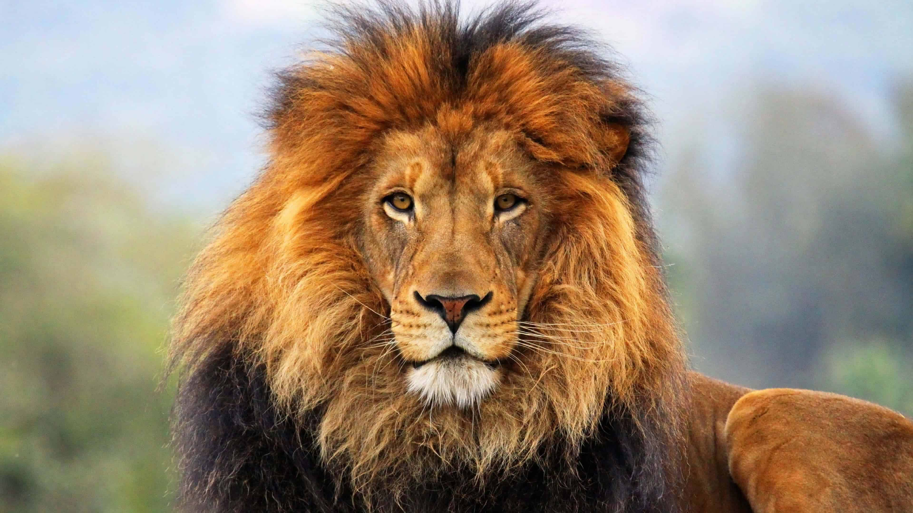
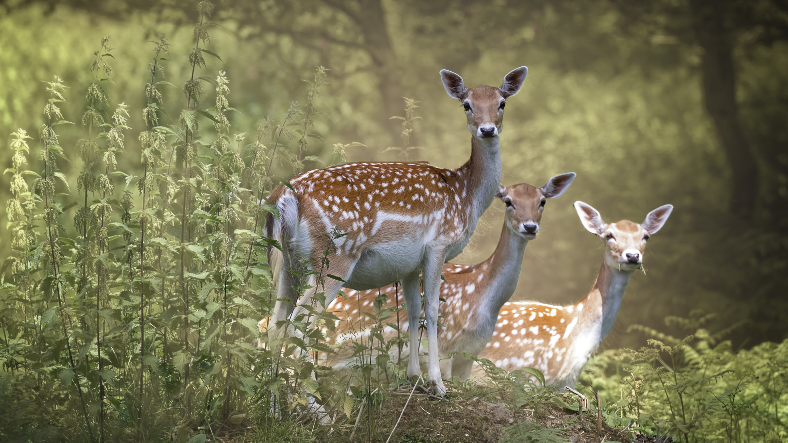
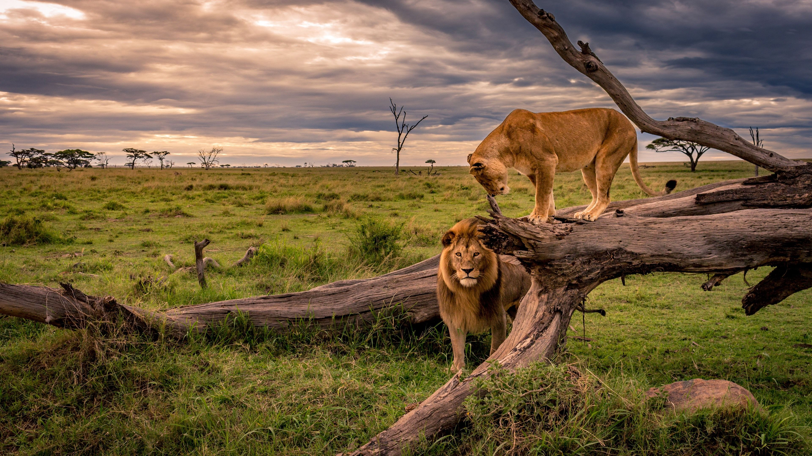
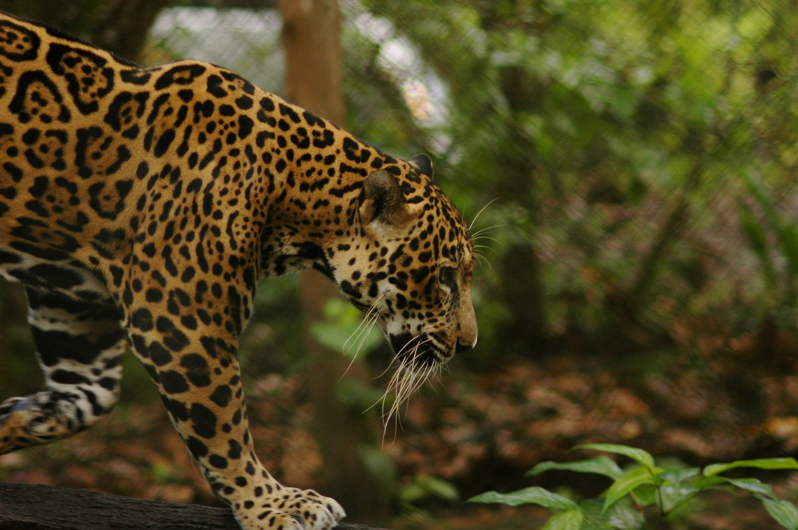
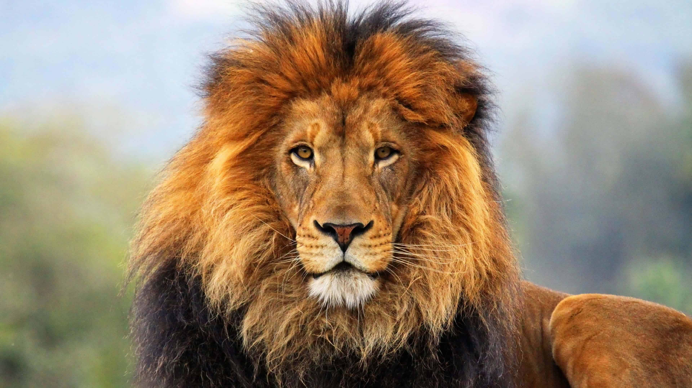
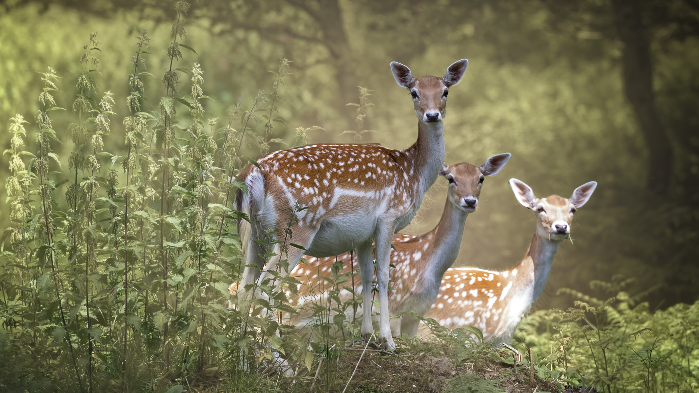
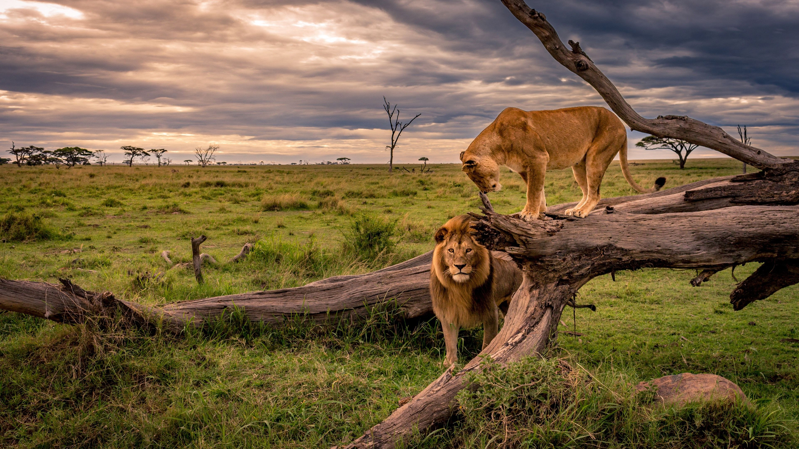
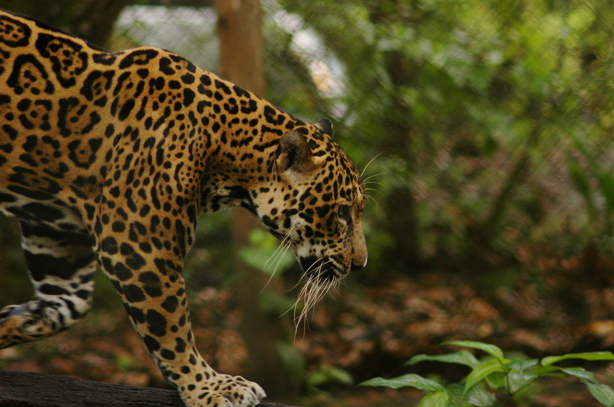

General Information
"Tadoba" is taken from the name of the god "Tadoba" or "Taru", worshipped by the tribes who live in the dense forests of the Tadoba and Andhari region, while "Andhari" refers to the Andhari river that meanders through the forest
According to the 2010 National Census on Tigers, there are about 43 tigers in the reserve, which is one of the highest in India.
History
Legend holds that Taru was a village chief who was killed in a mythological encounter with a tiger. Taru was deified and a shrine dedicated to Taru now exists beneath a large tree on the banks of Tadoba Lake.[3] The temple is frequented by adivasis, especially during a fair held annually in the Hindu month of Pausha (December–January).
The Gond kings once ruled these forests in the vicinity of the Chimur hills. Hunting was banned in 1935. Two decades later, in 1955, 116.54 square kilometres (45.00 sq mi) of this forest area was declared a national park. Andhari Wildlife Sanctuary was created in the adjacent forests in 1986. In 1995, the park and the sanctuary were merged to establish the present tiger reserve.
Geography
Water reserves
Tadoba Andhari Reserve is the largest national park in Maharashtra. The total area of the reserve is 625.4 square kilometres (241.5 sq mi). This includes Tadoba National Park, with an area of 116.55 square kilometres (45.00 sq mi) and Andhari Wildlife Sanctuary with an area of 508.85 square kilometres (196.47 sq mi). The reserve also includes 32.51 square kilometres (12.55 sq mi) of protected forest and 14.93 square kilometres (5.76 sq mi) of uncategorised land.
To the southwest is the 120 hectares (300 acres) Tadoba Lake which acts as a buffer between the park's forest and the extensive farmland which extends up to Irai water reservoir. This lake is a perennial water source which offers a good habitat for Muggar crocodiles to thrive. Other wetland areas within the reserve include Kolsa Lake and the Andhari river.
Flora
Tadoba Reserve is a predominantly southern tropical dry deciduous forest with dense woodlands comprising about eighty seven per cent of the protected area. Teak is the predominant tree species. Other deciduous trees found in this area include ain (crocodile bark), bija, dhauda, hald, salai, semal and tendu. Beheda, hirda, karaya gum, mahua madhuca (crepe myrtle), palas (flame-of-the-forest, Butea monosperma) and Lannea coromandelica (wodier tree). Axlewood (Anogeissus latifolia, a fire-resistant species), black plum and arjun are some of the other tropical trees that grow in this reserve.
Patches of grasses are found throughout the reserve. Bamboo thickets grow throughout the reserve in abundance. The climber kach kujali (velvet bean) found here is a medicinal plant used to treat Parkinson's disease. The leaves of bheria are used as an insect repellent and bija is a medicinal gum. Beheda is also an important medicine found here.[
Wildlife
According to Dr Bilal Habib, Head of Wildlife Institute of India's Department of Animal Ecology and Conservation Biology, 88 individual Tigers were recorded using the SECR Methodology in 2020 (44 in the core zone, 23 in the buffer zone and 21 in the core and buffer zone). There are about 115 plus tigers in Tadoba, 88 in the forest and 27 immediately outside the reserve.
Aside from the keystone species, the Bengal tiger, Tadoba Tiger Reserve is home to other mammals, including: Indian leopards,[8] sloth bears, gaur, nilgai, dhole, small Indian civet, jungle cats, sambar, barking deer, chital, chausingha and honey badger. Tadoba lake sustains
the marsh crocodile, which was once common all over Maharashtra. Reptiles here include the endangered Indian python and the common Indian monitor. Terrapins, Indian star tortoise, Indian cobra and Russel's viper also live in Tadoba.The lake contains a wide variety of water birds, and raptors. 195 species of birds have been recorded, including three endangered species. The grey-headed fish eagle, the crested serpent eagle, and the changeable hawk-eagle are some of the raptors seen in the park.
Other bird species found in the reserve include the orange-headed thrush, Indian pitta, crested treeswift, stone curlew, crested honey buzzard, paradise flycatcher, bronze-winged jacana, lesser goldenbacked woodpecker, various warblers, black-naped blue flycatcher and the Indian peafowl.74 species of butterflies have been recorded including pansies, monarchs, mormons and swordtails. Insect species include the endangered danaid egg-fly and great eggfly. Dragonflies, stick insects, jewel beetles and the praying mantis are other insects in the reserve. The signature spider, giant wood spider and red wood spiders are often seen during the monsoon and soon after. Some hunting spiders like the wolf spiders, crab spiders and lynx spiders are also common.[9] A black panther was spotted in May 2018. As per the officials, it is a rare sight since black panthers normally live in evergreen forests and not in dry deciduous forests like Tadoba Tiger Reserve.
Threats
There are 41,644 people living in and around the reserve in fifty nine villages of which five are inside the core zone. These villages in the core zone still farm inside the core area. The process of rehabilitation is going on. Recently the Navegaon village was rehabilitated, and grassland is expected on the place where the village existed. There are 41,820 cattle within the core and buffer zone. While cattle grazing is not allowed in the core zone, regulated grazing in the buffer zone is allowed to cattle of the village inhabitants. However, cattle in peripheral villages sometimes find their way into the reserve and cause additional damage to the habitat.
Forest fires are a constant problem in the dry season,[11] consistently burning between 2% and 16% of the park each year. The killing of domestic livestock by tigers and leopards is a frequent phenomenon in neighboring villages. This has an adverse impact on the economic condition of the local people and results in a negative view of the reserve management. In the year 2013, at least four people and 30-50 cattle were killed by leopards, tigers or sloth bears. Densely forested hills form the northern and western boundary of the tiger reserve. The elevation of the hills ranges from 200 metres (660 ft) to 350 metres (1,150 ft).
 






